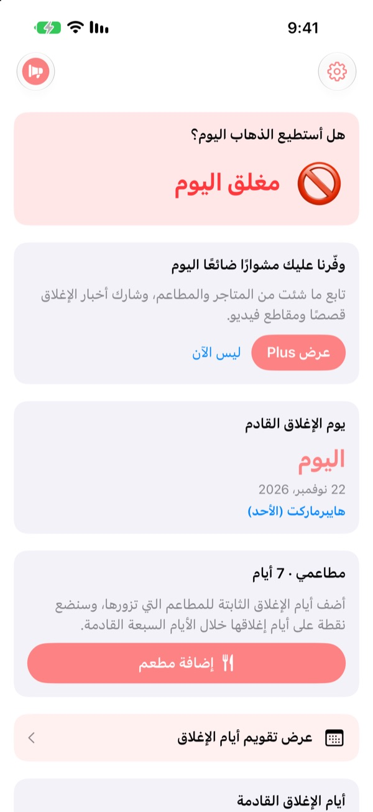
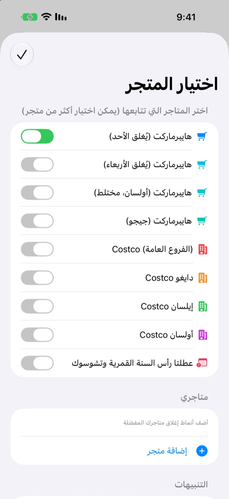
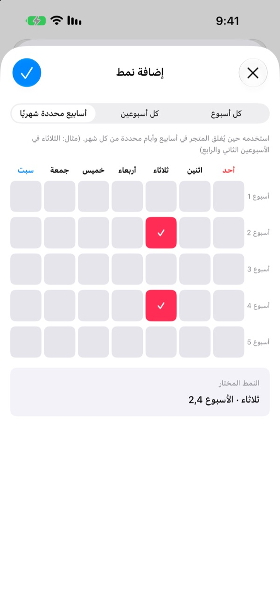
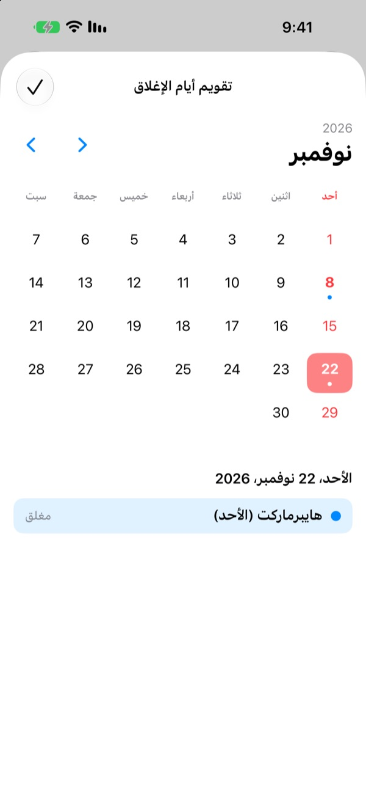
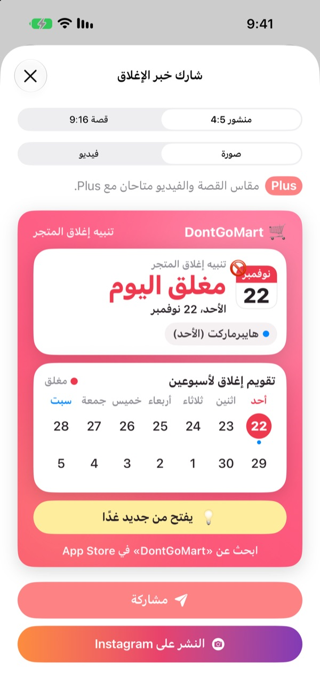

قبل أن تخرج للتسوّق
تأكد أن المتجر مفتوح
عند فتح التطبيق ترى أولًا هل متاجرك مفتوحة اليوم. ويصلك تنبيه قبل كل يوم إغلاق، فلا تصل إلى أبواب مغلقة.
معرفة أيام الإغلاق والتنبيهات مجانية. بلا حساب وبلا إعلانات.

جرّبه مع متجرك
اختر متجرًا لترى هل هو مفتوح اليوم ومتى يُغلق في المرة القادمة. يعتمد على القواعد نفسها التي يستخدمها التطبيق.
هل وصلت يومًا بقائمة التسوّق إلى متجر مغلق؟
يجب على الهايبرماركت الكبرى في كوريا أن تُغلق يومين في الشهر، لكن هذين اليومين يختلفان حسب المنطقة. معظمها يُغلق في الأحد الثاني والرابع، وبعضها يوم الأربعاء، ولأولسان وجيجو قواعدهما الخاصة. وتختلف Costco من فرع لآخر. يحسب DontGoMart أيام الإغلاق للمتاجر التي تقصدها، ويخبرك أول شيء هل تستطيع الذهاب اليوم.
مناسب لكل منطقة
اختر المتاجر التي تُغلق يوم الأحد أو يوم الأربعاء، أو المناطق التي لها جدول خاص مثل أولسان وجيجو. لفروع Costco العامة ولفروع دايغو وإيلسان وأولسان إعداد مستقل لكل منها.
ويظهر إغلاق رأس السنة القمرية وتشوسوك أيضًا، ويمكنك متابعة عدة متاجر معًا.

متجر حيّك ومطاعمك المفضلة
إن لم تجد المتجر في القائمة فأضفه بنفسك: كل أسبوع، أو كل أسبوعين، أو في أسابيع محددة من الشهر وفي يوم معيّن.
وللمطاعم، الصق رابطًا شاركته من Naver Map أو اختر لقطة شاشة لصفحة معلومات المطعم، فتُملأ أيام إغلاقه الثابتة تلقائيًا. يُقرأ النص في الصور على جهازك فقط.

تنبيهات وأدوات كي لا تنسى
اختر أن يصلك التنبيه قبل الإغلاق بيوم أو يومين أو 3 أيام أو 7 أيام في الساعة التي تحددها، ومعه تذكير في اليوم السابق بأن اليوم مناسب للتسوّق.
تعرض أدوات الشاشة الرئيسية وشاشة القفل أقرب يوم إغلاق، وهل المتجر مفتوح يوم الأحد هذا، وأيام إغلاق مطاعمك في الأسبوع القادم. ويعرض التقويم أيام إغلاق شهر كامل.

شاركه في بطاقة واحدة
حوّل الخبر إلى بطاقة فيها تقويم لأسبوعين ونصيحة للتسوّق وأرسلها إلى محادثة العائلة. تأتي البطاقات بمقاس منشور Instagram ومقاس القصة، وفي مقاطع فيديو قصيرة أيضًا.

ثلاث خطوات للبدء
- 1
اختر متاجرك
فعّل المتاجر والمناطق التي تتسوّق فيها، واختر منها ما شئت.
- 2
فعّل التنبيهات
اختر قبل كم يوم وفي أي ساعة.
- 3
أضف أداة
اعرف من الشاشة الرئيسية أو شاشة القفل دون فتح التطبيق.
قواعد الإغلاق حسب المتجر
- هايبرماركت (يُغلق الأحد)
- الأحد الثاني والرابع · معظم المناطق
- هايبرماركت (يُغلق الأربعاء)
- الأربعاء الثاني والرابع · أجزاء من غيونغي، تشونغجو
- هايبرماركت (أولسان)
- الأربعاء الثاني، الأحد الرابع
- هايبرماركت (جيجو)
- الجمعة الثانية، السبت الرابع
- Costco (الفروع العامة)
- الأحد الثاني والرابع
- Costco دايغو
- الاثنين الثاني والرابع · دايغو، دايغو هيوكشين
- Costco إيلسان
- الأربعاء الثاني والرابع
- Costco أولسان
- الأربعاء الثاني، الأحد الرابع
- رأس السنة القمرية، تشوسوك
- الإغلاق في يوم العيد نفسه
تحدد الحكومات المحلية أيام الإغلاق الإلزامية وقد تتغير. إن لاحظت خطأ فأخبرنا على العنوان أدناه.
أسئلة
أيام الإغلاق لا تطابق الواقع.
تحدد اللوائح المحلية أيام الإغلاق الإلزامية وتختلف من منطقة لأخرى. تأكد في الإعدادات أنك اخترت نوع المتجر الصحيح (يُغلق الأحد، يُغلق الأربعاء، أولسان، جيجو وغيرها). وإن بقي الخطأ فراسلنا باسم المتجر والمنطقة وسنتحقق من الأمر.
متجري غير موجود في القائمة.
أضفه متجرًا خاصًا بك. اختر كل أسبوع أو كل أسبوعين أو أسابيع محددة من الشهر واليوم الذي يُغلق فيه، مثل الأحد الثاني والرابع.
لم تُملأ أيام إغلاق المطعم بشكل صحيح.
عند الاستيراد من رابط Naver Map، يجب أن تذكر صفحة المطعم أيام إغلاقه الثابتة. وعند استخدام لقطة شاشة، تأكد أن عبارة الإغلاق ظاهرة على الشاشة. ويمكنك تعديل ما مُلئ قبل الحفظ.
لا تصلني التنبيهات.
تأكد أن الإشعارات مسموح بها في الإعدادات > الإشعارات > DontGoMart، وأن تنبيهات أيام الإغلاق مفعّلة داخل التطبيق.
الأداة لا تتحدّث.
فتح التطبيق مرة واحدة يحدّث الأدوات. وإن بقيت قديمة فاحذف الأداة وأضفها من جديد.
ما هو الدعم؟
معرفة أيام الإغلاق وتلقي التنبيهات مجانيان. مع Plus تضيف مزيدًا من المتاجر والمطاعم وتشارك بالقصص والفيديو، ومع Pro تحصل على الأدوات الإضافية وأدوات شاشة القفل والتعبئة التلقائية لأيام إغلاق المطاعم. أما دعم القهوة والكعكة والوجبة فطريقة لتشجيع المطوّر، وبعده تصلك رسالة شكر وشارة داعم بعدد مرات دعمك. الدعم لا يفتح أي ميزات.
أين أسأل عن الدفع أو الاسترداد؟
تعالج Apple المشتريات داخل التطبيق، لذا اطلب الاسترداد من reportaproblem.apple.com. ولأي شيء آخر راسلنا بالبريد.
كيف تُعامل بياناتي؟
لا حسابات ولا إعلانات ولا أدوات تتبّع، ويُقرأ النص في لقطات الشاشة على جهازك فقط. التفاصيل في سياسة الخصوصية أدناه.
عندك سؤال أو فكرة؟ راسلنا على leeo@kakao.com. عادةً نرد خلال يوم أو يومين.